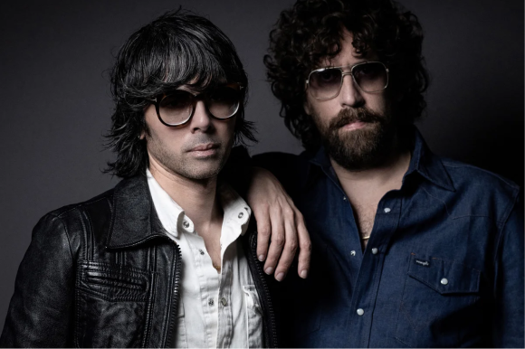
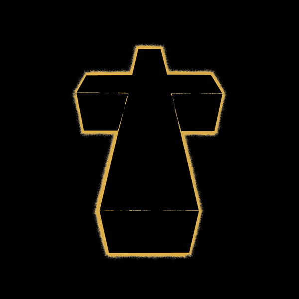

Опубликовано: 4 сентября, 2025 года, 10:01
Альбом Cross французского дуэта Justice изменил звучание электронной музыки. Его не нужно понимать — его нужно чувствовать. Justice обрушили на слушателя лавину перегруженных синтов и мощного баса, заставив электронику звучать как рок.
Главная сила альбома — в контрастах. Мрачная Waters Of Nazareth и поп-хит D.A.N.C.E. существуют на одном диске. Звук кажется грубым, но каждый элемент выточен с точностью. Этот дисбаланс и стал фирменным стилем.
Участники группы Justice - Ксавье де Росне и Гаспар Оже
Такие треки, как Genesis или One Minute To Midnight, показали диапазон дуэта. Альбом стал мостом между андеграундом и мейнстримом, доказав, что электроника может быть брутальной и театральной. Cross — обязательная точка на карте современной музыки, история о том, как два парижанина заставили мир танцевать под свой гениальный ритм.
Обложка Cross
Очень рекомендую как минимум ознакомиться с этим альбомом, ставшим классикой. Также, ждите вскоре обзора на их свежий альбом при участии Tame Impala!
Перейти к альбому Cross